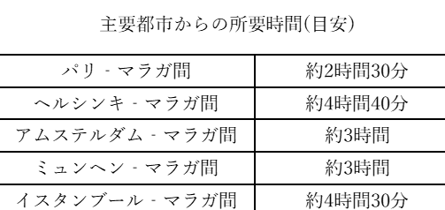

-----Drection-----
ミハスへ行くためにまずマラガ空港へ向かいます。
日本からマラガへの直行便はありません。しかし、他国とのアクセスは非常に良いです。
ミハスへ行く前に乗り継ぎする都市で観光するのもいいかもしませんね。

マラガ空港からミハスまでは直通のバスか電車とバスを乗り継いで行くパターンがあります。
直通のバスの本数は少ないですが、乗り換えもないので行きはこちらをおすすめします。
帰りはバスと電車を乗り継いで帰ると良いでしょう。